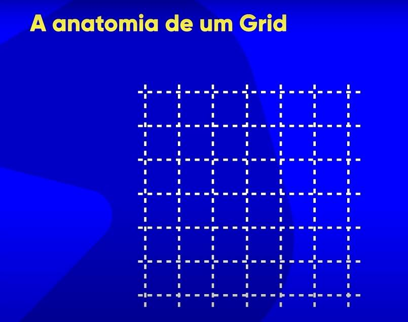

Créditos:
A Anatomia de um Grid
2:42Neste exemplo abaixo temos uma "Grid" 6x6 que equivale a 6/linhas e 6/colunas:

Créditos:
Neste exemplo abaixo temos uma "Grid" 6x6 que equivale a 6/linhas e 6/colunas:
O 'container' é a caixa que envolve outras caixas; Ou podemos chamar o container de "caixa pai", que é onde contém outras caixas que podem ser chamadas de "itens" ou "elemento filhos" como podemos ver no exemplo abaixo:
...................
Na imagem seguinte vemos que um 'item' ou "vários itens" se forma na junção das grades:

Quando temos vários itens na mesma linha ou na mesma coluna; "Estes itens que vão do ínicio ao fim da grade" e que seja na vertical ou na horizontal, chamamos a estes de
"Grid Track".
O nome "Grid Track". é um nome genérico, pois existem os nomes para os blocos deitados e os blocos em pé; Que são:'linha e coluna'.
"OUTRO DETALHE IMPORTANTE:" Quando as "tracks" se encontram; Esse ponto de encontro|cruzamento, chamamos de 'Item de Grade'.
Observe no detalhe da imagem acima, onde o "item de grade" tem a sua cor destacada.
Quando temos uma "grid track" /deitada/horizontal, chamamos ele de row_track, e quando temos a "track" /em-pé/vertical, chamamos ela de column_track como podemos ver no exemplo da imagem abaixo:

A Numeração das 'grid lines' podem ser (positivas ou negativas) e compreender isto, facilita na hora de criação de /grades.

Quando temos um agrupamento de itens, nós chamamos a isto de "Grid Area" ou (área de grid.)

Chamado por muitos de 'respiro'; O espaço entre os elementos é conhecido como "Grid Gap".
Veja como fica este "respiro", Observando as imagens abaixo:
"OBS": O uso do "Grid Gap" não altera o tamanho do item(Grid Item).